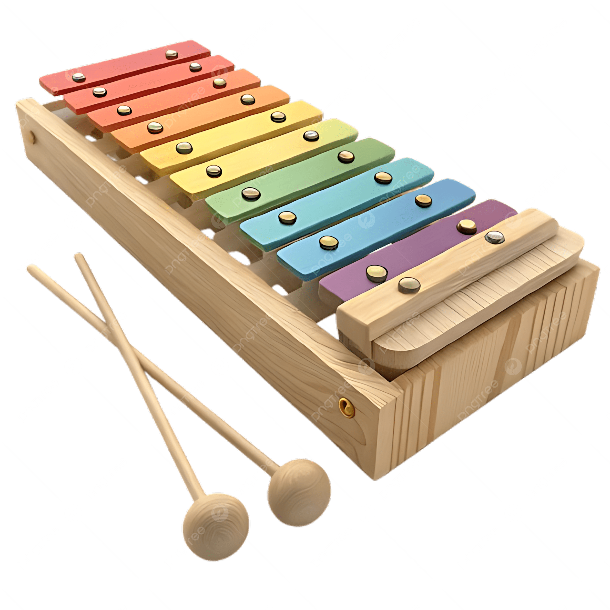
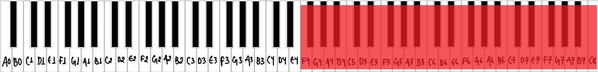
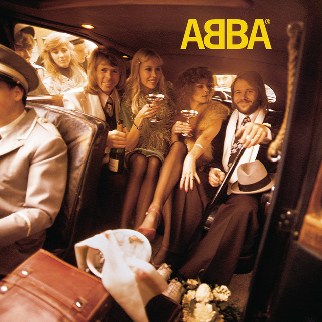
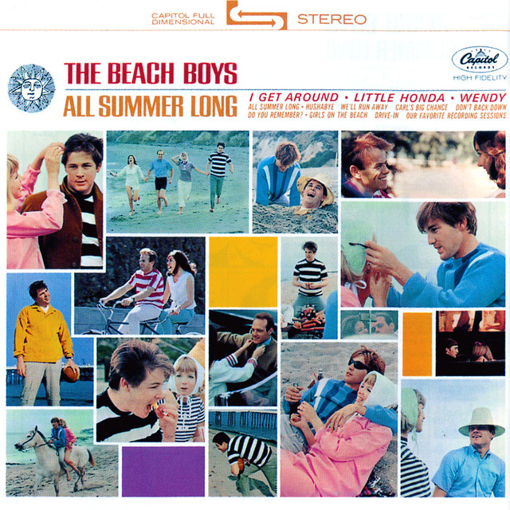
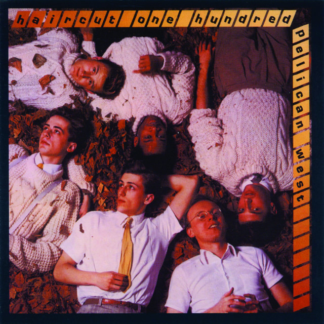

What is a xylophone?
The xylophone is a pitched percussion instrument made of wooden bars laid out like a piano keyboard. The player strikes the bars with hard mallets, which makes a bright, dry, crisp tone. Each bar is cut to a different length, so each one has a different pitch. [1]


Musical range and clef
A concert xylophone usually has about three and a half octaves. It is written from F4 to C8, but it sounds one octave higher than written. [2]
Xylophone music is written in the treble clef, one octave lower than it sounds, so that the notes stay on the staff. [3]

Where is the xylophone seated in an orchestra?
The percussion section is at the very back of the orchestra, behind the brass, often along the back or right side of the stage. Exact placement changes with the piece and the hall. The xylophone sits with the other mallet percussion at the back of the orchestra. [4]
Popular songs/pieces that feature the instrument:

Mamma Mia

All Summer Long

Love Plus One
References
- Wikipedia, "Xylophone".
- Wikipedia, "Xylophone".
- Wikipedia, "Xylophone".
- Rockford Symphony Orchestra, "Are all orchestras arranged on stage the same way?".